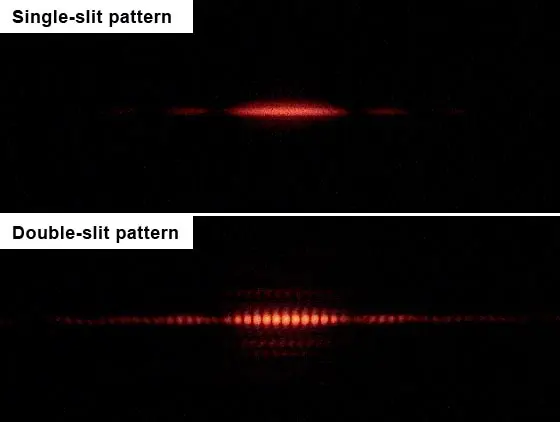

Themes › Theme C Wave behaviour
C.3Wave phenomena + HL extra
What happens when waves meet a boundary, squeeze through a gap, or meet each other? Reflection, refraction, diffraction and interference explain rainbows, optical fibres, noise-cancelling headphones and the colours on a soap bubble. They also gave the first strong evidence that light is a wave. Sections 1–8 are for everyone. Sections 9–11 are HL only and clearly marked.
Knowledge and science
Nature of science
Competing theories. In the 1600s, Isaac Newton thought light was a stream of tiny particles, while Christiaan Huygens argued it was a wave. Both theories explained reflection and refraction, and Newton's enormous reputation kept the particle view dominant for a century.
Evidence. Around 1801 Thomas Young showed that light through two narrow slits makes a pattern of bright and dark fringes. This is interference, which particles couldn't easily explain.
Falsification. In 1818 Siméon Poisson tried to disprove Augustin Fresnel's wave theory. He showed it predicted an absurd result: a bright spot at the centre of the shadow of a round disc. François Arago did the experiment, and the spot was there. An attempted refutation became famous support for the theory.
ToK: questions to think about
- How does a community choose between theories? Both the particle and the wave theories of light explained some observations. What made scientists finally change their minds, and how much did reputation matter?
- Can trying to disprove a theory prove it right? Poisson's "absurd" prediction ended up confirming the wave theory. What does this say about how evidence supports a theory?
- How simple is too simple? Young's double-slit formula ignores the effect of each slit's width (HL). When is it acceptable to leave parts out of a model for clarity?
- Can something be two things at once? Here light behaves as a wave. In E.2 it behaves as particles (photons). Is light "really" one or the other, or are both just models?
1. Wavefronts and rays
Waves spreading out in two or three dimensions are described with two kinds of line:
- A wavefront joins neighbouring points that are in phase, such as a line along each crest. Neighbouring wavefronts are one wavelength apart.
- A ray shows the direction the wave (and its energy) travels. Rays are always perpendicular to wavefronts.
2. Reflection and transmission
When a wave reaches a boundary between two media, part of it is usually reflected and part transmitted into the new medium. A pane of glass, for example, reflects a little light and transmits most of it.
- All angles are measured from the normal, a line perpendicular to the boundary.
- Law of reflection: angle of incidence = angle of reflection.
- On reflection, the speed, frequency and wavelength are all unchanged. Only the direction changes.
3. Refraction and Snell's law
Refraction is the change in direction of a wave as it crosses a boundary, because its speed changes. The frequency is fixed by the source, so the wavelength changes in proportion to the speed. A wave that slows down bends towards the normal; one that speeds up bends away from it. A wave meeting the boundary along the normal doesn't change direction, but it still changes speed and wavelength.
For light, the refractive index of a material is $n = \dfrac{c}{v}$: how many times slower light travels in it than in a vacuum. For air, $n \approx 1.00$; water, 1.33; glass, about 1.5. Snell's law links the angles (from the normal) to the indices and speeds:
Equivalently, $n_1\sin\theta_1 = n_2\sin\theta_2$. Medium 1 is the one the wave comes from.
Worked example: light entering water
A ray of light in air hits a water surface at 50° to the normal. Find the angle of refraction and the speed of light in water ($n = 1.33$).
$1.00 \sin 50° = 1.33 \sin\theta_2$, so $\sin\theta_2 = 0.576$ and $\theta_2 = 35°$, bent towards the normal.
$v = \dfrac{c}{n} = \dfrac{3.00\times10^{8}}{1.33} = 2.26 \times 10^{8}\ \text{m s}^{-1}$.
4. Critical angle and total internal reflection
When light goes from a medium with a higher refractive index into one with a lower index (glass to air, for example), it bends away from the normal. As the angle of incidence increases, the refracted ray gets closer to the boundary. At the critical angle $\theta_c$, the refracted ray runs along the boundary ($\theta_2 = 90°$). Snell's law then gives:
For any angle larger than $\theta_c$, no light escapes: it is all reflected. This is total internal reflection (TIR). It can only happen going into a medium with a lower refractive index.
Uses: optical fibres carry internet data as pulses of light trapped in thin glass fibres by repeated TIR. Medical endoscopes use bundles of fibres to see inside the body. Diamonds sparkle because their high refractive index (2.4) gives a small critical angle, so light reflects around inside them many times.
Worked example: critical angles
Find the critical angle for glass ($n = 1.50$) in air, and in water ($n = 1.33$).
In air: $\sin\theta_c = \dfrac{1.00}{1.50}$, so $\theta_c = 41.8°$. In water: $\sin\theta_c = \dfrac{1.33}{1.50} = 0.887$, so $\theta_c = 62.5°$.
Surrounding the glass with water makes TIR harder to achieve. That's why optical fibres have a "cladding" with a carefully chosen lower refractive index.
5. Diffraction
Diffraction is the spreading of a wave as it passes through a gap (aperture) or around the edge of an obstacle. The wavelength, frequency and speed don't change, only the shape of the wavefronts.
- Diffraction is most noticeable when the gap or obstacle is similar in size to the wavelength. A much wider gap gives very little spreading.
- That's why you can hear round a corner but not see round it. Sound wavelengths (about 1 m) are similar to doorways, while light wavelengths (about $5\times10^{-7}$ m) are far smaller.
- Long-wavelength radio waves diffract around hills, so they can be received in valleys where shorter-wavelength signals can't reach.
- Huygens' principle explains diffraction: every point on a wavefront acts as a source of new wavelets. A narrow gap lets through only a small part of the wavefront, which behaves like a point source.
Linking question What evidence is there that particles possess wave-like properties such as wavelength? NoS E.2 Electron diffraction (HL) →
6. Superposition
When two or more waves meet, they pass through each other. Where they overlap, the total displacement is the sum of the individual displacements. This is the principle of superposition. After meeting, each wave carries on unchanged.
- Two crests (or two troughs) meeting give a bigger displacement: constructive interference.
- A crest meeting an equal trough cancels it: destructive interference.
- Displacements have signs, so add them as signed numbers. Two pulses of $+3$ cm and $-1$ cm give $+2$ cm where they overlap.
7. Two-source interference
To produce a steady interference pattern, the two sources must be coherent: the same frequency, with a constant phase difference. Two speakers driven by the same signal generator are coherent. Two separate light bulbs aren't, because their phases change randomly millions of times a second. So for light, both "sources" are made from the same source, for example by passing a laser beam through two slits.
At any point, what happens depends on the path difference: how much further the wave from one source has travelled than the wave from the other. For two sources in phase:
where $n = 0, 1, 2, \ldots$ Waves arriving in step reinforce each other. Waves arriving half a cycle out of step cancel.
Worked example: loud or quiet?
Two loudspeakers connected to the same signal generator emit sound of wavelength 0.50 m. A student stands 3.25 m from one speaker and 4.00 m from the other. Is it loud or quiet there?
Path difference $= 4.00 - 3.25 = 0.75$ m $= 1.5\lambda$. This is $(n + \tfrac{1}{2})\lambda$ with $n = 1$, so the interference is destructive and it's quiet there. (It's rarely perfectly silent, because of reflections from walls and unequal amplitudes.)
8. Young's double-slit experiment
Light from a single source (today, usually a laser) passes through two narrow, closely spaced slits. The two slits act as coherent sources, and an interference pattern of equally spaced bright and dark fringes appears on a distant screen.

The fringes are further apart for a longer wavelength (red more than blue), a more distant screen, or slits closer together. To measure $\lambda$, measure across several fringes and divide, to reduce the percentage uncertainty in $s$.
Worked example: measuring a laser's wavelength
Red laser light passes through two slits 0.50 mm apart. On a screen 2.0 m away, the distance across 10 fringe spacings is 25 mm. Find the wavelength.
$s = 25/10 = 2.5$ mm. $\lambda = \dfrac{sd}{D} = \dfrac{2.5\times10^{-3} \times 0.50\times10^{-3}}{2.0} = 6.3\times10^{-7}$ m $= 630$ nm, which is red, as expected.
Linking question What can an understanding of the results of Young’s double-slit experiment reveal about the nature of light? E.2 Wave–particle duality (HL) →
9. Single-slit diffraction HL
Light diffracting through a single slit of width $b$ also produces a pattern of bright and dark bands. Waves from different parts of the slit interfere with each other (Huygens' wavelets).
- There is a wide, bright central maximum, with much dimmer side maxima. The first side maximum is only about 5% as bright as the centre, and the next is under 2%.
- The central maximum is twice as wide as each side maximum.
- The angle from the centre to the first minimum is given by the formula below, where $\theta$ is in radians and is small:
Effect of slit width and wavelength: a narrower slit (smaller $b$) or a longer wavelength gives a wider pattern. The narrower slit also lets through less light, so the pattern is dimmer. With white light, the central maximum is white (every colour is bright there), with coloured edges: blue on the inside and red on the outside, because red has the longest wavelength and spreads most.
Worked example: width of the central maximum HL
Light of wavelength 600 nm passes through a slit 0.12 mm wide onto a screen 3.0 m away. How wide is the central maximum?
$\theta = \dfrac{\lambda}{b} = \dfrac{600\times10^{-9}}{0.12\times10^{-3}} = 5.0\times10^{-3}$ rad.
For small angles, distance from the centre to the first minimum $\approx D\theta$ $= 3.0 \times 5.0\times10^{-3} = 15$ mm. The central maximum is twice this: 30 mm wide.
10. The double-slit pattern revisited HL
Each slit in a double-slit experiment has a width, so each one produces its own single-slit diffraction pattern. The two-slit interference fringes are still equally spaced ($s = \lambda D/d$), but their brightness follows the single-slit pattern. We say the single-slit pattern modulates the double-slit pattern, acting as an "envelope".
- The fringes near the centre are brightest. Further out they fade, following the envelope.
- Where a double-slit bright fringe would fall on a single-slit minimum, it is missing.
- Narrower slits make a wider envelope, so more fringes are clearly visible.
11. Multiple slits and diffraction gratings HL
With more equally spaced slits (spacing $d$), the bright maxima stay in the same positions as for two slits. But they become much narrower and brighter, with very faint secondary maxima between them. A diffraction grating has hundreds of lines per millimetre, so its maxima are extremely sharp. That makes it ideal for measuring wavelengths precisely.
For a grating at normal incidence, the bright maxima are at angles $\theta$ given by:
$n$ is the order (0 for the straight-through central maximum, then 1, 2, …) and $d$ is the line spacing. A grating with $N$ lines per metre has $d = 1/N$.
- This formula doesn't use the small-angle approximation. Grating angles are often large.
- Since $\sin\theta \le 1$, the highest possible order is the largest whole number with $n \le d/\lambda$.
- White light gives a white central maximum ($n = 0$, where all wavelengths are in phase). Each other order is a full spectrum, violet nearest the centre and red furthest out. Higher orders can overlap. Gratings are used in spectrometers to identify elements from the light they emit (E.1).
Worked example: a diffraction grating HL
Green light of wavelength 550 nm falls normally on a grating with 500 lines per mm. Find the angles of the maxima, and the highest order visible.
$d = \dfrac{1}{500\times10^{3}} = 2.0\times10^{-6}$ m.
$n = 1$: $\sin\theta = \dfrac{550\times10^{-9}}{2.0\times10^{-6}} = 0.275$, so $\theta = 16°$. $n = 2$: $\sin\theta = 0.55$, so $\theta = 33°$. $n = 3$: $\sin\theta = 0.825$, so $\theta = 56°$.
$n = 4$ would need $\sin\theta = 1.1$, which is impossible. So the highest order is 3 ($d/\lambda = 3.6$).
Extra linking question How do diffraction gratings let astronomers find out what stars are made of? E.1 Spectra and chemical composition →
End of the HL-only content for C.3.
12. Common mistakes
- Measuring angles from the surface instead of from the normal.
- Thinking frequency changes on refraction. Speed and wavelength change; frequency doesn't.
- Saying total internal reflection can happen going into a denser medium. It only happens going into a medium with a lower refractive index.
- Saying diffraction changes the wavelength. Only the shape and direction of the wavefronts change.
- Forgetting the coherence condition for a steady interference pattern.
- Mixing up $d$ and $D$ in $s = \lambda D/d$, or forgetting to convert mm and nm to m.
- HL Using degrees in $\theta = \lambda/b$. It gives $\theta$ in radians.
- HL Using the slit width $b$ in $n\lambda = d\sin\theta$, or the spacing $d$ in $\theta = \lambda/b$.
- HL Giving an order where $\sin\theta > 1$. Always check that the order exists.
13. Check your understanding
Why does a straw in a glass of water look bent?
Light from the underwater part of the straw refracts away from the normal as it leaves the water. Your brain assumes light travels in straight lines, so it traces the rays back to a point that appears higher than where the straw really is.
Why can you hear someone talking in the next room through an open door, but not see them?
Sound wavelengths (around 1 m) are similar to the width of the door, so sound diffracts strongly around it. Light wavelengths are about a million times smaller than the door, so light barely diffracts and travels in straight lines.
In a double-slit experiment, what happens to the fringe spacing if the red laser is swapped for a blue one?
Blue light has a shorter wavelength, and $s = \lambda D/d$, so the fringes get closer together.
Why can't two separate torches produce a visible interference pattern?
They aren't coherent. The phase difference between them changes randomly and very rapidly, so any pattern shifts too fast to see and averages out to even illumination.
HL A single slit is made narrower. What happens to the diffraction pattern?
It gets wider ($\theta = \lambda/b$, so a smaller $b$ gives a larger $\theta$) and dimmer, because less light gets through.
HL Why are diffraction gratings better than double slits for measuring wavelengths?
With many slits, the maxima are much narrower and brighter, so their positions (angles) can be measured far more precisely.